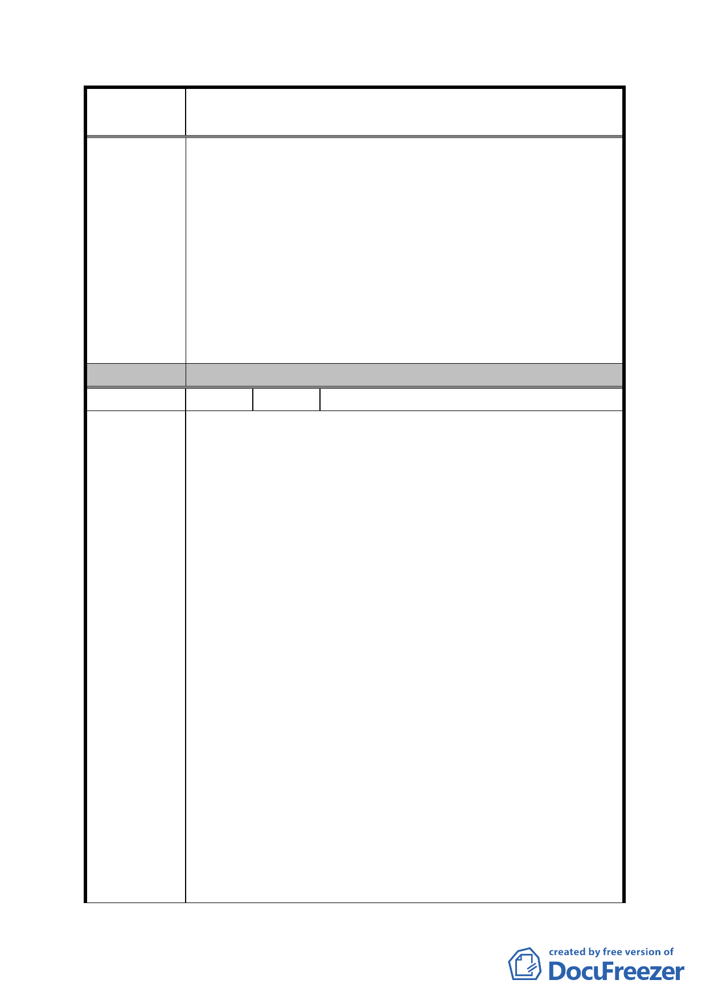

案
名
修訂臺北市「基隆河（中山橋至成美橋段）附近地區土地使
用分區與都市設計管制要點」（北段地區）計畫案
參與「促進都市再生 2010 年臺北好好看」之個案應規範
建築物低層部之商業使用，不需規範建築高度。而未參與
「促進都市再生 2010 年臺北好好看」之新開發案，得應
市場機制規範建物高度，創造都市優美天際線。
六、騎樓、迴廊及無遮簷人行道：
為發展大眾運輸導向，將以敬業二路與敬業四路做重點發
展，與敬業三路作系統式的人行步道系統，並可將整區的公
共開放空間串聯。因此無須於 B2 基地 16-6 地號設置立體連
通系統往東延伸至 16-5 地號基地，在接至 29 地號基地，最
後向北連接到停車場。
委 員 會 決 議 同編號 1。
編 號 31 陳情人 廖慧明建築師事務所（A2）
一、土地及建築物之使用議題 :
大內科工業區已開放作商業商務辦公使用，且租金低廉，
造成大彎北段地區之商業辦公機能降低，為避免市場供過
於求之土地利用效率不彰情形，建議調整街廓編號 A2 之
商業區(供商業購物中心使用)及娛樂區之指定使用項目
其容積樓地板面積應達申請基地最小法定建蔽率之建築
面積乘以 3 倍之限制，以利購物中心商場配置及樓層規劃
之彈性。
二、建築物立面寬度議題 :
若按上述規定，將會嚴重影響建築配置，對於城市所要塑
陳 情 理 由 造多元的建築外型與建築設計將會有很大之出入；另建築
設計將有大幅修改並重新設計，將影響各案參與「促進都
市再生 2010 年臺北好好看」之時程，並造成本案更大的
人力與物力成本。
三、建築容積及獎勵規定議題 :
（一）條文：1.刪除商業區及娛樂區建築基地，作指定使
用項目之樓地板面積應達申請基地總容積樓地板
面積 1/2 以上者，使得就該指定使用項目之容積樓
地板面積適用綜合設計放寬規定之獎勵。
理由：為提供較完整且利於休憩功能之公共開放空間，滿
足本地區因居住人口增加而衍生之公共開放空間
- 90 -